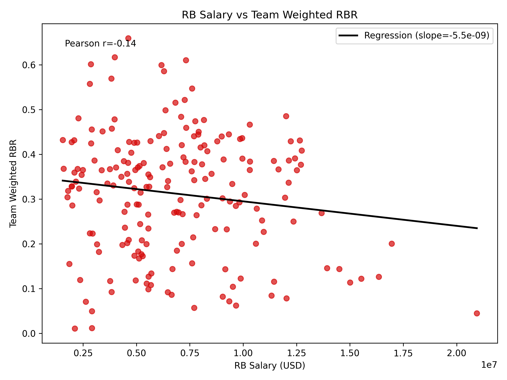

Quarterback Salaries vs QBR
We analyzed the relationship between team spending on quarterbacks and on-field efficiency. The scatter plot below shows each team-season’s weighted QBR against its total quarterback salary. The fitted line indicates a weak positive relationship (Pearson correlation = 0.10). In other words, higher spending on quarterbacks shows only a modest association with better quarterback performance.

Running Back Salaries vs RBR
Similarly, we plotted team spending on running backs against our Running Back Rating. The scatter plot and regression line reveal an even weaker relationship (Pearson correlation = -0.14). This suggests that paying running backs more does not strongly translate into higher rushing efficiency.
Do Quarterbacks or Running Backs Matter More for Winning?
To assess which position drives team success, we correlated our performance metrics with team wins. The left plot shows that team weighted QBR has a stronger positive correlation with wins (Pearson r = 0.66) than running back efficiency does (Pearson r = 0.00). While correlation does not imply causation, this analysis suggests that quarterback play is more closely associated with winning than running back production.
Overall, our regression and correlation analyses indicate that while teams must pay quarterbacks a premium, the return on investment is only moderately positive. In contrast, spending on running backs offers little explanatory power for performance or wins. Moreover, quarterback performance has a stronger relationship with winning than running back efficiency does, underscoring the importance of quarterback play in today’s NFL.